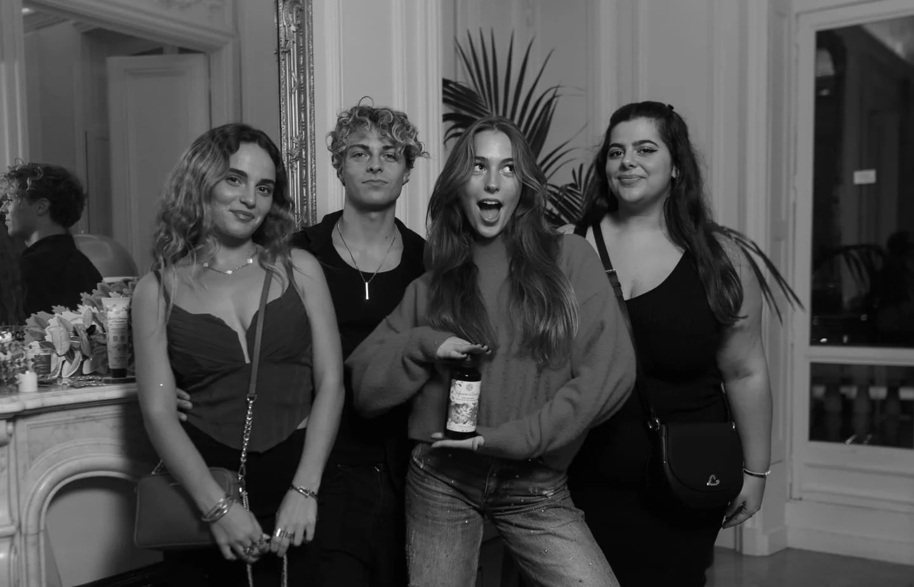
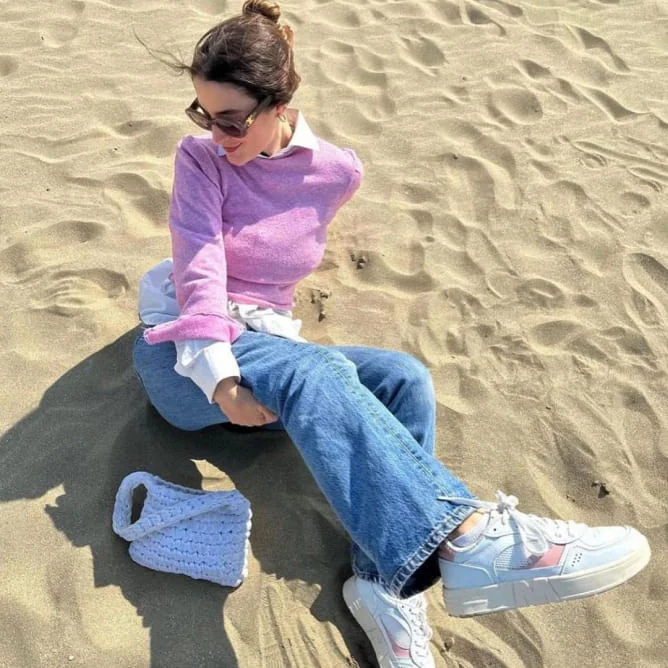

Brand Content / Évènements / Stratégie
Yves Rocher

Le projet
Création et production de A à Z de la soirée de Noel Influence & Presse d’Yves Rocher.
01 •
Le contexte
A l’occasion de sa soirée de Noël annuelle, Yves Rocher nous confie l’intégralité de son événement d’influence. Une soirée haute en couleur et mémorable afin de préparer la destination cadeaux et être la marque beauté de référence à cette période clé de fin d’année.
02 •
Notre proposition
Création d’un événement éco-responsable autour de l’univers féérique de noël « il était une fois » : un véritable voyage sensoriel pour célèbrer la magie des souvenirs et la beauté de la nature bretonne qui ont inspiré yves rocher. Nous avons recréé la maison familiale et chaleureuse Yves Rocher, qui invite à découvrir le pouvoir émotionnel des souvenirs à travers les 5 sens, une immersion dans l’univers de la marque, afin de découvrir leur nouvelle gamme de produits exclusive.
Une gestion de A à Z: concept global, recherche de lieux, casting, activation d’influence, scénographie, gestion des prestataires, ateliers créatifs, invitations des créateurs de contenus et journalistes, gestion des droits d’image, bilan global.
Tout était pensé et optimisé pour que les créateurs passent un bon moment, participent à des challenges et créent des contenus sur leurs réseaux
Création de contenus : vidéo social media, vidéo marque employeur, shooting photo ambassadeur de marque et invités (presse et influenceurs)
Les résultats.
Un story telling ultra féérique, une production respectée à la perfection, un timing respecté, un nombre d’invités au delà des attentes, un taux de rétention élevé sur place et surtout une satisfaction à 300 % de tous nos invités !
La Team Anekdote a remporté notre appel d’offres sur l’organisation de notre soirée de Noël influence & RP. L’équipe a su être créative, force de proposition et agile pour gérer de A à Z l’événément phare de l’année chez Yves Rocher. Un vrai succès, notamment grâce à leur excellente relation avec les talents ! Le + : équipe professionnelle et super sympathique. »

Le projet suivant